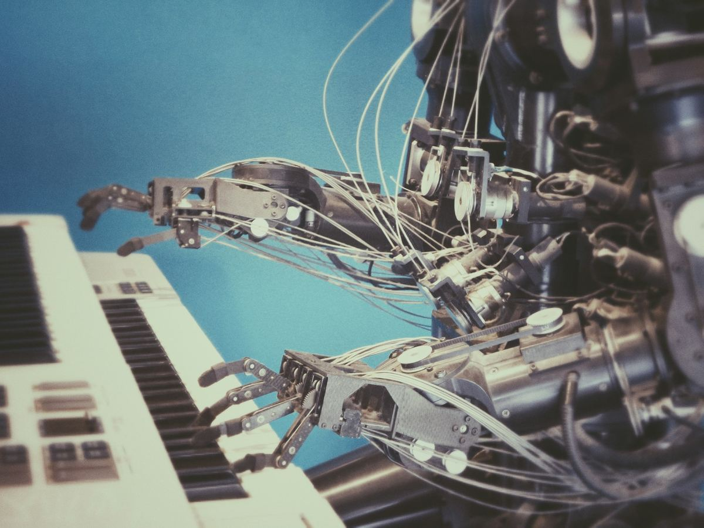

What is HIL good for, anyway?
Hardware-in-the-loop (HIL) lets you drive simulated software with a real peripheral, or drive a real board with a simulated MMIO bus. Both are useful — and EoSim 2.4 ships both, on the same wire protocol.
The ezbus protocol
ezbus is a tiny binary protocol over USB CDC or TCP. Each frame is a 16-byte header plus payload: timestamp, peripheral ID, opcode (read/write/interrupt), and address. EoSim translates ezbus frames into virtual MMIO traffic, and the optional ezbus-fpga shim turns ezbus into actual MMIO transactions on a real silicon target.
Two directions
In the simulator-driven direction: EoSim is the source of truth. You boot an EoS image inside the simulator and a real PHY (Ethernet, CAN, 1-wire, etc.) is wired into the simulated host. Useful for validating drivers against real wire behavior without burning a board for every change.
In the silicon-driven direction: a physical board is the source of truth, but its MMIO traffic is mirrored into a simulated peripheral inside EoSim. Useful for replaying captured traffic or fuzzing peripherals at speeds the real silicon can't deliver.
Performance
ezbus over USB sustains 4 µs round-trip on a stock STM32H7 evaluation board. Over TCP on the same LAN, expect 80 µs. Both are fast enough for driver work; neither is fast enough for cycle-accurate validation. For that, see EoSim's classic JTAG bridge.
Read next

eos-platform 1.0 lands: one toolchain, every EoS profile
After eighteen months of incremental releases, the eos-platform meta-distribution reaches 1.0 with stable APIs, a unified package manifest, and reproducible builds across all 14 EoS components.
EAI 0.9 ships INT4 LLM runtime — 11 tok/s on a Cortex-M85
EAI's new quantized inference path squeezes a 1.3B-parameter model into 312 MB of flash and runs at interactive speed on a 480 MHz microcontroller. We dig into the kernel scheduler that made it possible.
ENI's 1,024-channel pipeline: deterministic spike sorting in 800 µs
How the Embedded Neural Interface stack moves a thousand-electrode array through filtering, sorting, and decoding inside a single RTOS frame — and why the hardest part wasn't the math.